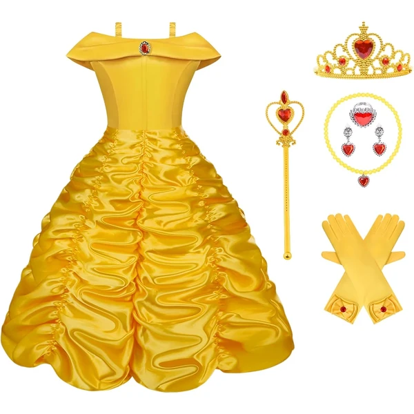
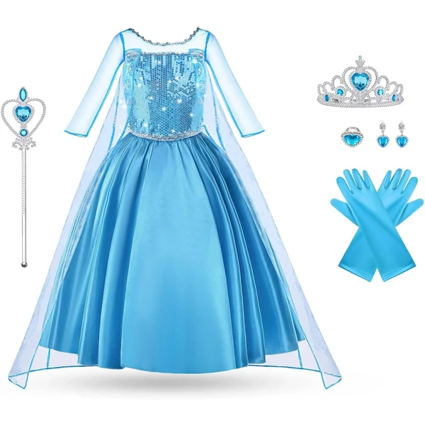
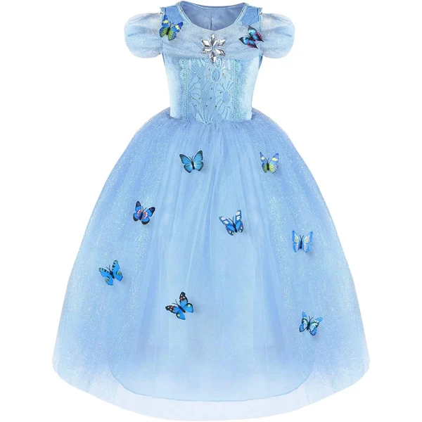
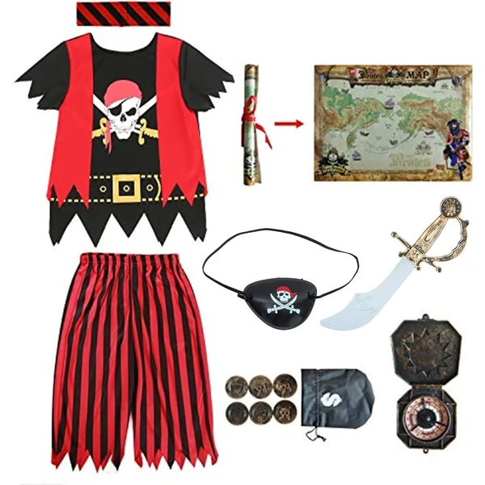
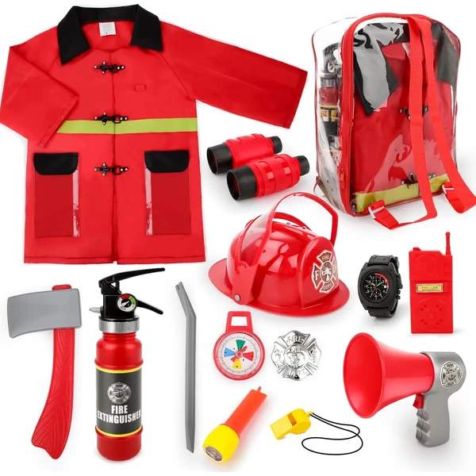

A los 4 años el juego de roles se vuelve mucho más elaborado: el niño no solo se pone el disfraz, sino que inventa diálogos, escenas y hasta reglas propias para su personaje. Es una etapa perfecta para disfraces de oficios, animales o personajes favoritos, que alimentan horas de juego imaginativo, solo o con otros niños. En esta selección encontrarás disfraces pensados para esta edad.
¿Qué desarrollan los disfraces a los 4 años?
Inventar diálogos y escenas completas para su personaje es un salto importante en el juego simbólico.
- Juego simbólico
- Imaginación
- Expresión emocional
- Lenguaje
- Habilidades sociales
- Creatividad

Vicloon Disfraz de Bella
Un vestido de princesa con accesorios a juego, inspirado en el clásico personaje de cuento, pensado para fiestas de disfraces y juego simbólico.
⭐ ¿Por qué nos gusta?
- ✔ Incluye accesorios a juego con el vestido.
- ✔ Diseño fiel al personaje clásico.
- ✔ Fácil de poner y quitar.
💬 Lo que más destacan las familias
Lo que más suele gustar es que venga con todos los accesorios a juego, sin tener que buscar nada por separado. Los detalles del acabado también se notan, y eso hace que el disfraz aguante bien varios usos.
Ver en Amazon

Rubies Disfraz Spider-Man
Un mono de una pieza con el estampado clásico de Spider-Man, cubrebotas y máscara incluidos, con licencia oficial Marvel. Cierre trasero de velcro para facilitar vestirlo.
⭐ ¿Por qué nos gusta?
- ✔ Licencia oficial Marvel.
- ✔ Cubrebotas y máscara incluidos.
- ✔ Cierre de velcro, fácil de poner.
💬 Lo que más destacan las familias
Muchos padres coinciden en que es cómodo para llevarlo puesto durante horas, algo importante cuando el niño no quiere quitárselo en todo el día. El cierre de velcro también facilita mucho vestirlo sin ayuda.
Ver en Amazon

Vicloon Disfraz de Elsa
Un vestido azul inspirado en la popular princesa de hielo, con corona y varita mágica incluidas, pensado para fiestas temáticas y juego de imitación.
⭐ ¿Por qué nos gusta?
- ✔ Incluye corona y varita mágica.
- ✔ Diseño fiel al personaje.
- ✔ Tejido cómodo para todo el día.
💬 Lo que más destacan las familias
Una de las cosas más comentadas es lo ilusionadas que se ponen las fans del personaje al verse con la corona y la varita puestas. Se agradece también no tener que completar el look con accesorios comprados aparte.
Ver en Amazon

Rubies Disfraz Iron Man
Un mono de una pieza en rojo y amarillo con los detalles impresos de la armadura de Iron Man, cubrebotas y máscara de plástico incluidas, con licencia oficial Marvel.
⭐ ¿Por qué nos gusta?
- ✔ Licencia oficial Marvel.
- ✔ Cubrebotas y máscara incluidos.
- ✔ Cierre de velcro trasero, fácil de vestir.
💬 Lo que más destacan las familias
Los compradores valoran especialmente el detalle de la armadura impresa, que hace que el disfraz se parezca mucho al personaje real. Traer máscara y cubrebotas incluidos también evita tener que buscar nada más.
Ver en Amazon

URAQT Disfraz de Princesa Mariposa
Un vestido de tul con apliques de mariposa y detalles brillantes, pensado como disfraz de princesa genérico para fiestas, cumpleaños o juego libre.
⭐ ¿Por qué nos gusta?
- ✔ Falda de tul mullida, muy vistosa.
- ✔ Tejido suave, cómodo sobre la piel.
- ✔ No está atado a un personaje concreto.
💬 Lo que más destacan las familias
Entre los comentarios más habituales aparece que sirve para muchas ocasiones distintas, sin quedar ligado a un personaje que pase de moda. La falda mullida de tul también suele ser lo primero que llama la atención de las niñas.
Ver en Amazon

Sincere Party Disfraz de Pirata
Un disfraz completo de pirata disponible en varias tallas, con chaqueta, pañuelo y demás detalles del personaje, pensado para fiestas temáticas y juego de aventuras.
⭐ ¿Por qué nos gusta?
- ✔ Disponible en varias tallas, de 3 a 10 años.
- ✔ Conjunto completo, no requiere accesorios extra.
- ✔ Alternativa a los disfraces de princesa o superhéroe.
💬 Lo que más destacan las familias
No es raro encontrar comentarios sobre lo bien que funciona como cambio frente a los disfraces de superhéroes o princesas de siempre. El pañuelo y la chaqueta ayudan a meterse en el papel de pirata sin necesitar nada más.
Ver en Amazon

deAO Disfraz de Bombero
Un set de 14 piezas con traje de bombero, casco y accesorios como un extintor de juguete, pensado para el juego de imitación de profesiones.
⭐ ¿Por qué nos gusta?
- ✔ 14 piezas, incluye casco y extintor de juguete.
- ✔ Fomenta el juego de imitación de profesiones.
- ✔ Alternativa a los disfraces de personajes de ficción.
💬 Lo que más destacan las familias
Un detalle que aparece una y otra vez es lo mucho que juegan a "apagar fuegos" con el extintor de juguete, inventando historias propias en vez de imitar a un personaje. El casco también suele ser uno de sus favoritos.
Ver en Amazon

AOOWU Disfraz de Sirena
Un set de 4 piezas con vestido de sirena, peluca, corona y cetro a juego, pensado para fiestas temáticas y juego de imitación de cuentos marinos.
⭐ ¿Por qué nos gusta?
- ✔ Set completo de 4 piezas, incluye peluca.
- ✔ Corona y cetro a juego con el vestido.
- ✔ Temática distinta a los disfraces de princesa clásicos.
💬 Lo que más destacan las familias
Se repite bastante el comentario de que la peluca incluida marca la diferencia frente a otros disfraces de sirena. Con la corona y el cetro a juego, muchas niñas se sienten completamente transformadas.
Ver en Amazon